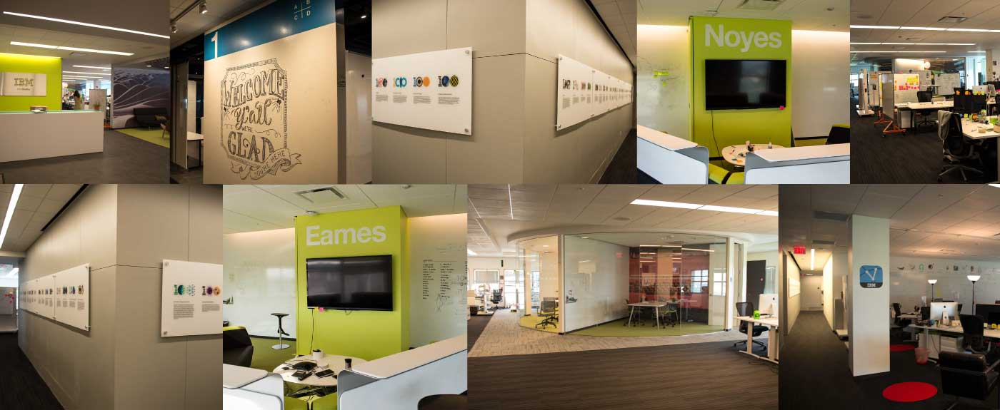

IBM Design Austin Studio
Design Culture @ IBM
Projects
- Wayfinding System
- Studio Guide to Everything
- Office Installations
- Verse Icon
Role
In addition to my work on the, practices content, I participated and led projects to contribute to the IBM Austin Studio Culture and greater IBM Design initiative.
Work
The goal of these projects was to maintain and scale a culture of design across IBM corporate campuses, and to studios and offices around the world.
Over the past ____ years, IBM has successfully hired and acquired _____ designers, planning to reach 2,000 this year. The goal of this initiative is to bring design thinking and user-centered design into the core of all IBM products, teams, and people. With so many designers, and over 400,000 IBMers world wide, this initiative has many challenges, the most significant being scale.
IBM Austin Studios Wayfinding Update
As IBM Studios Austin expanded in both space and employees, there was a need to improve the wayfinding system. The studio hosts ____ designers, and workshops and visitors daily, elevating the importance of a strong singage system. 74 percent of staff surveyed had difficulty orienting themselves, and individuals tended to self-identify as unconfident for the first year to year and a half.
Problem
The studio was difficult to navigate becasue of its layout and design. Ultimately, it lacked imageability. Typically, a user becomes more familiar with a space, and over multiple experiences or explosures is able to develop an image or mental model of their envoirnment. With two floors (designed and opened at seperative times), identical hallways, meeting spaces, and layouts, mastery of the floors was greatly impacted. The second probelm revolved around inconsistencies. Naming and numbering conventions for meeting rooms and collaborative spaces, as well as inconsistent inclusivity weaked users' ability to navigate.

Solution
To unify the two floors and improve studioer's orienteering, the wayfinding system took advantage of already established landmarks (kitchens and stairwells) and regions (colored regions of the floors and well-known meeting spaces) of the studio. Nodes, or locations where wayfinding desicions were made, were identified throughout the two floors and were used to layout the signage needs and system. The system has been adopted into additional offices since its design.
Prototype
Signs and directions were printed and pasted throughout the studio to encourage feedback and gain better insight into what was successful and what needed to be reconsidered. To see the prototype and read a bit more about it, check out my process entry about it.

Visual Design
The visual look and feel progressed through three iterations ranging on the spectrum of sophisticated and polished to playful and charming. Red, Blue, Green, and Yellow were chosen to echo the already established regions on the 7th floor. The illustrations were inspired by both IBM heritage, the naming and design aethetics of the floor, and the illustration work practiced around the office.
Illustrations

Final Design

IBM Studios Austin: Guide to Everything
As mentioned above, over the past 4 years, IBM has been hiring a ton of designers. Over time it became clear that there was a need for on boarding, to answer questions about IBM Design, the office, and the culture/ values of “studioers”. I worked closely with my team to develop the content, look and feel, and final book to be delivered to new hires before their respective start dates. This edition was made specifically for the Austin Studio, however in the future, the goal is for each studio to customize and produce their own for their studioer population.
Event Installations
IBM Studios Austin is the headquarters and birthplace of the IBM design initiative. During my time at IBM we hosted events for both internal and external visitors. I got to help with Ginny Rometty's, Chairman and CEO, and Robert LeBlanc's, VP IBM Cloud, talks and visits to the Austin Studio. For each event, I designed the backdrops, themed based on the topic of the event.


Ginny Rometty's visit to the IBM Studios Austin Campus


Robert LeBlanc's visit to the IBM Studios Austin Campus
Retrospective
Having the permission and invitation to contirbute to IBM Design's culture was a priviledge. These projects intoduced me to first and foremost "culture-creation", exhibition design, book design and production, and project management. Tackling problems both in and out of my expertise and working with people of diverse backgrounds gave me a chance to apply design thinking outside of software.